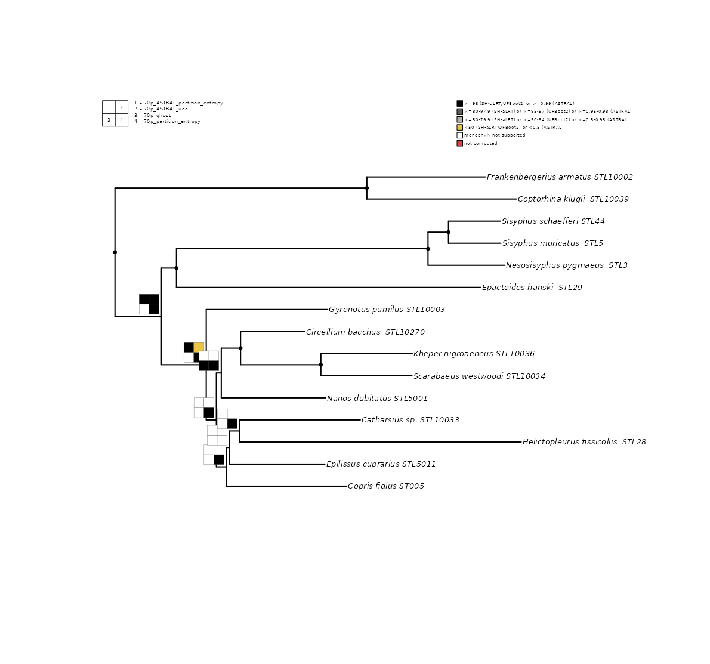
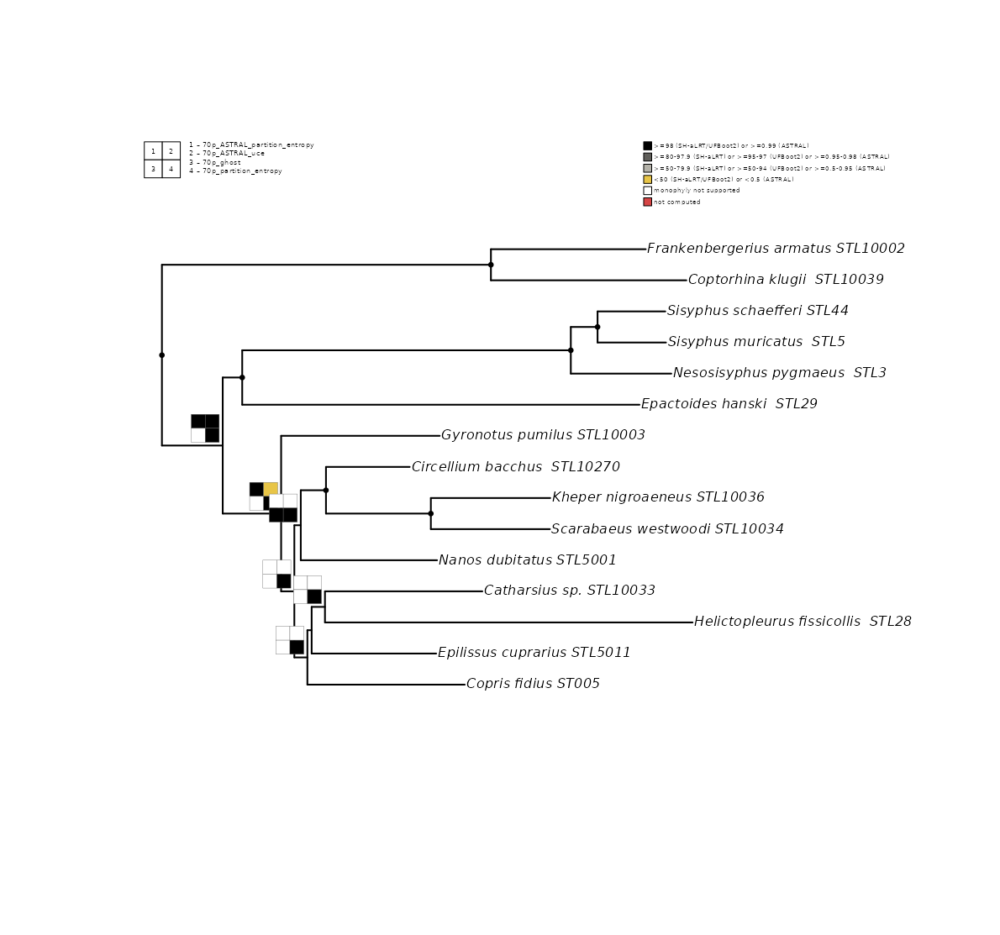
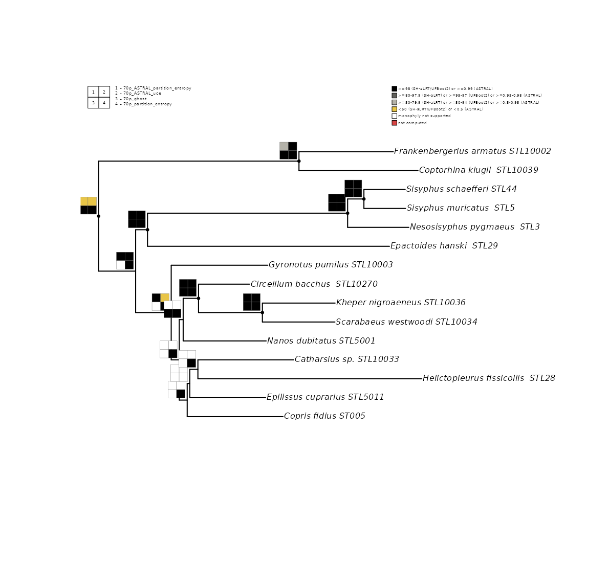
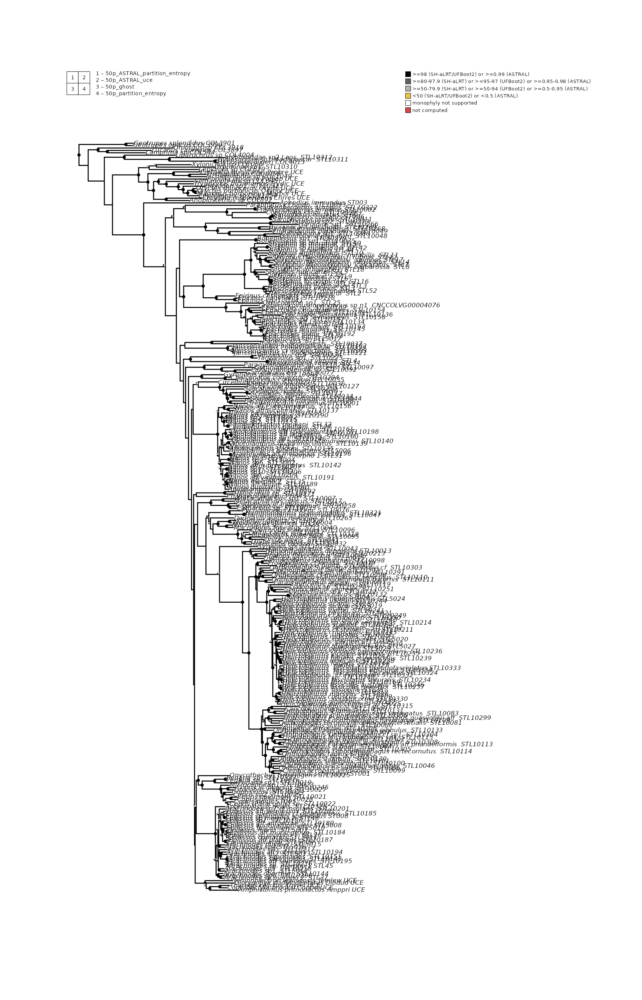
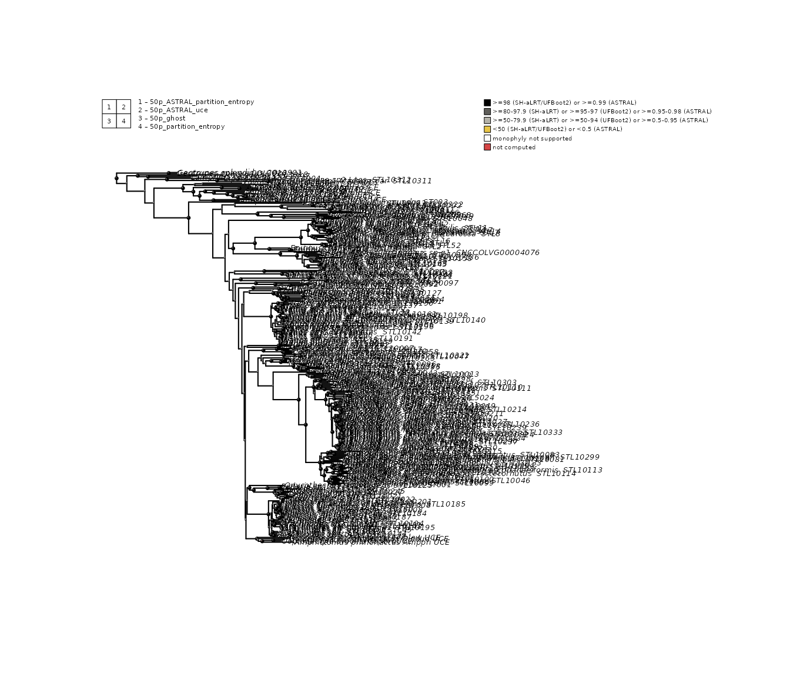
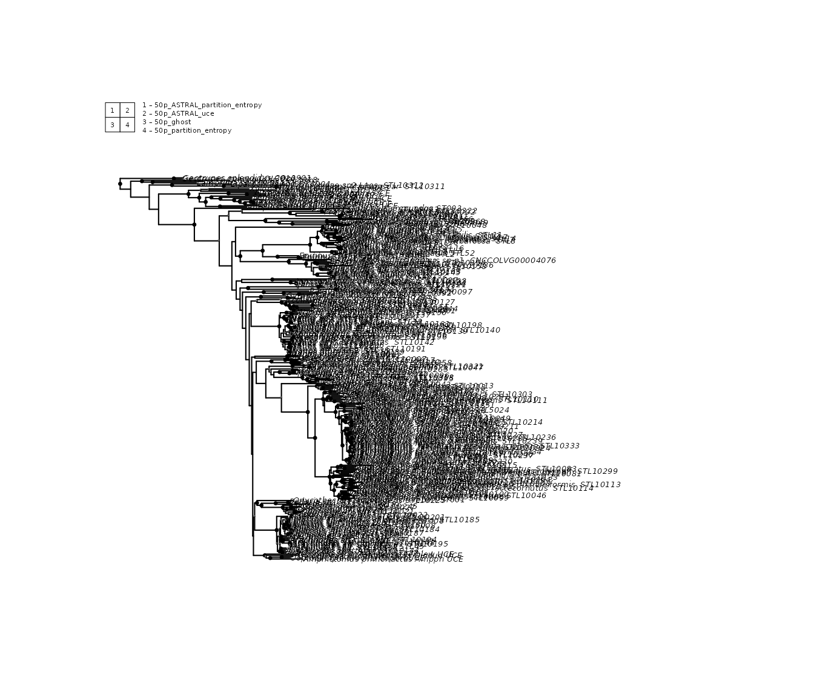

What problem does phylorug solve?
Phylogenetic trees represent best-supported, statistically convincing hypotheses of evolutionary history, not ground truths (Steenwyk et al. 2023). Modern phylogenomic studies routinely produce multiple trees from the same set of taxa. Different data types (UCEs, transcriptomes, whole genomes), different analytical strategies (concatenation, coalescent methods, site-heterogeneous models), and different inference software (IQ-TREE, ASTRAL, MrBayes) each yield a tree with slightly different topology and its own support values in its own format. At the same time, no single tree inference method is proven to be the all-rounder that is immune to all sources of error.
Incomplete lineage sorting, long-branch attraction, model misspecification, and compositional heterogeneity each affect different methods differently (Fleming et al. 2023). Accouringly, exploring multiple strategeies , on different data types and different infrence pipelines is the way researchers detect nodes that may be artifacts of a particular analytical choice versus nodes that hold up regardless of method.
The question at every node is:
Does this clade appear in all analyses, and how strongly does each one support it?
Answering that by flipping between tree files is tedious, error-prone, and does not scale. phylorug solves it by drawing a compact coloured grid a rug at every internal node of a reference tree(backbone). Each cell represents one tree, its colour shows whether that tree recovered the clade and how strongly it supported it.
Nodal support versus nodal stability
Giribet (2003) drew a distinction that motivates the two modes of phylorug. Nodal support measures how confident a single analysis is in a clade such as bootstrap, posterior probability, or LPP. Nodal stability measures whether that clade is consistently recovered across different analytical strategies, data types, and inference methods ,extending Wheeler’s (1995) parameter-space sensitivity analysis framework. These can decouple: a clade may receive 100% bootstrap under one model yet collapse under all others, or carry only 30–50% support everywhere yet appear in every tree.
phylorug shows both. In presence mode, each node gets a
black dot if every analysis recovers the clade (stable) or a rug showing
which analyses recover it and which do not.
In support mode, contested nodes receive a rug where
each cell gives a quantitative visual of the support value in that
analysis , not just presence or absence, but how strongly the clade is
endorsed. Stable nodes receive a black dot by default. Setting
rug_on_identical = TRUE extends the rug to these
universally recovered nodes as well, revealing cases where a clade is
stable across all analyses but some analyses support it weakly.
Brief history
The rug plot concept originated with Wheeler (1995), who plotted clade recovery across gap and transversion–transition cost ratios in parsimony analysis under direct optimization (POY). Giribet (2003) named these plots “Navajo rugs” and showed that nodal support and nodal stability can tell different stories.
Sanders (2010) automated clade detection with Cladescan (Perl), and Machado (2015) extended the approach with YBYRÁ (Python), which added topological distance calculation and rogue taxon detection alongside sensitivity analysis. Both tools produce individual SVG plots per node that must be manually placed onto the tree in a vector editor. Cladescan is no longer available online, and YBYRÁ has been archived by its developer and is no longer maintained. More importantly, both were designed around sensitivity analysis within a single analytical framework — varying parameters and cost schemes — rather than comparing trees from fundamentally different inference pipelines that report support in incompatible formats (e.g., UFBoot2, SH-aLRT, posterior probability, ASTRAL LPP).
phylorug extends this lineage into R. It reads trees from any pipeline, bins support values against metric-specific thresholds rather than rescaling them numerically, and draws rugs directly on the reference tree — no manual placement, no external software.
Quick start
The fastest way to see phylorug in action is with the built-in
sample_trees dataset — a 15-taxon subset of the beetle data
(Lopes et al., 2024), already rooted, pruned, and with tip labels
translated to species names. Lets start with attaching the package :
Load the data
sample_trees is a named list of five phylo
objects, all sharing the same 15 taxa. Pick one as the backbone and use
the rest as comparisons. In the original study 70p_uce is
used as a backbone tree.
Check taxon consistency
Before building a rug, verify that every comparison tree carries the
same taxa as the backbone. check_taxa() reports the outcome
and flags any mismatches:
check_taxa(backbone, others)
#> All 4 comparison trees share the same 15 taxa as the backbone.
#> [1] TRUE
#> attr(,"diagnostics")
#> comparison status n_taxa missing extra
#> 1 70p_ASTRAL_partition_entropy identical 15
#> 2 70p_ASTRAL_uce identical 15
#> 3 70p_ghost identical 15
#> 4 70p_partition_entropy identical 15All trees share the same 20 taxa, so we can proceed. IF a missmatch
is reported the helper function prune_to_shared() can be
used to get identical taxa set.
Build the node presence matrix
Once the trees share the same taxa, the next question is: which
clades from the backbone appear in which comparison trees, and how
strongly are they supported? node_presence_matrix() answers
this by walking every internal node of the backbone and checking each
comparison tree for the same clade. It returns two matrices: a
presence matrix (1 = clade recovered, 0 = absent) and a
support matrix containing the support values extracted
from the node labels of each tree. By default, the first support value
in each node label is used. If your trees carry compound labels like
100/98 (e.g., SH-aLRT/UFBoot2 from IQ-TREE),
support_col lets you select which value to extract,
support_col = 1 takes the first,
support_col = 2 takes the second. These two matrices are
what
npm <- node_presence_matrix(backbone, others, support_col = c(1, 2))The result is a named list.
npm$presence``is a matrix of 1s and 0s.npm$support_1` and
`npm$support_2hold the raw support values, with NA where the clade was not recovered. These matrices are whatplot_phylorug()`
uses to draw the rug, presence determines whether a
cell is filled or empty, support determines its shade
Plot the rug
With the node presence matrix ready, plot_phylorug()
draws the rug on the backbone. In its simplest form, all arguments are
defaults: mode = "presence",
dot_identical = TRUE (unanimous nodes get a black dot),
legend = TRUE, and rug_position = "inside".
The internal scaling engine sizes the canvas, fonts, and cell dimensions
automatically based on tree size.
plot_phylorug(backbone, npm)
For publication-quality output, setting file,
width, and height is strongly recommended. All
other arguments are worth exploring to fine-tune your figure, but these
three matter most.
plot_phylorug(backbone, npm, file = "presence.pdf", width = 12, height = 8)Support mode
Switch to support mode to see how strongly each analysis supports
each clade. Cells are shaded by binned support strength, darker means
stronger. Support values are binned against thresholds specific to their
own metric: a tree with LPP 0.95 and a tree with LPP 0.65 are compared
to LPP thresholds, while a tree carrying UFBoot2 values is binned
against UFBoot2 thresholds independently. phylorug never
cross-compares values from different support metrics, because LPP 0.95
and UFBoot2 95 do not measure the same thing despite looking numerically
identical. > > The support_type argument tells
phylorug which support metric each tree uses, so the
correct thresholds are applied. IQ-TREE UFBoot2 values are on a 0–100
scale; ASTRAL local posterior probabilities are on a 0–1 scale.
phylorug normalises these automatically. Define it once and
reuse across plot calls: > > >
r > support_type <- c( > "70p_ASTRAL_partition_entropy" = "lpp", > "70p_ASTRAL_uce" = "lpp", > "70p_ghost" = "ufboot", > "70p_partition_entropy" = "ufboot" > ) >
> > >
r > plot_phylorug( > backbone, npm, > mode = "support", > support_type = support_type > ) >
> >
 > > ### Reading the plot > > The plot carries two legends.
The position legend (top-left) maps each numbered cell
to an analysis — cell 1 is the first tree, cell 2 the second, and so on.
The threshold legend (top-right, support mode only)
shows what each shade means. > > At each node you will see one of
these patterns: > > - Black dot: all analyses
recover this clade unanimously (
> > ### Reading the plot > > The plot carries two legends.
The position legend (top-left) maps each numbered cell
to an analysis — cell 1 is the first tree, cell 2 the second, and so on.
The threshold legend (top-right, support mode only)
shows what each shade means. > > At each node you will see one of
these patterns: > > - Black dot: all analyses
recover this clade unanimously (dot_identical = TRUE, the
default). No rug is drawn to reduce clutter. > - Mixed
grid: some cells filled, some white. These are the interesting
nodes — the position legend tells you which analysis agrees and which
disagrees. > - All-white grid: no comparison tree
recovers this backbone clade. It is unique to the backbone topology.
> > In support mode, filled cells use a greyscale gradient plus
two special colours. Black is very high support (e.g.,
UFBoot >= 95, LPP >= 0.95), dark grey is high,
light grey is moderate, and yellow is
low support. White means the clade was not recovered.
Red means the clade was recovered but carries no
computable support value. > > ### Fine-tuning the figure > >
The following example shows how optional arguments refine the plot.
rug_on_identical = TRUE extends the rug to unanimous nodes,
revealing per-tree support strength even at stable clades.
hide_unsupported = TRUE leaves nodes where no analysis
recovers the clade bare, making genuine disagreements easier to spot.
cex controls tip label size. > > >
r > plot_phylorug( > backbone, npm, > mode = "support", > support_type = support_type, > rug_on_identical = TRUE, > hide_unsupported = TRUE, > cex = 1 > ) >
> >

Support mode
Switch to support mode to see how strongly each analysis supports each clade. Cells are shaded by binned support strength (darker = stronger) Support values are binned against thresholds specific to their own metric. A tree with LPP 0.95 and a tree with LPP 0.65 are compared to LPP thresholds, yielding different shades on the rug. A third tree carrying UFBoot2 values is binned against UFBoot2 thresholds independently — phylorug never cross-compares values from different support metrics, because LPP 0.95 and UFBoot2 95 do not measure the same thing despite looking numerically identical.
plot_phylorug(
backbone, npm,
mode = "support",
support_type = c(
"70p_partition_entropy" = "ufboot",
"70p_ghost" = "ufboot",
"70p_ASTRAL_uce" = "lpp",
"70p_ASTRAL_partition_entropy" = "lpp"
)
)
The support_type argument tells phylorug which support
metric each tree uses, so the correct thresholds are applied. IQ-TREE
UFBoot2 values are on a 0–100 scale; ASTRAL local posterior
probabilities are on a 0–1 scale. phylorug normalises these
automatically.
Reading the plot: what you see at each node
Look at the output. Several distinct patterns appear at the nodes:
Black dot — the most common pattern on
well-supported trees. All comparison trees recover this clade
unanimously. By default (dot_identical = TRUE), phylorug
draws a compact dot instead of a full grid to reduce visual clutter.
Mixed grid (black + white cells) — these are the interesting nodes. Some analyses recover the clade, others do not. The position legend at the bottom tells you which cell corresponds to which analysis, so you can see exactly which method or dataset disagrees.
All-white grid — no comparison tree recovers this
backbone clade. The clade is unique to the backbone topology. Set
hide_unsupported = TRUE to leave these nodes bare (no rug
drawn at all), which makes the remaining disagreements easier to
read.
Dot next to a rug — adjacent nodes can differ in consensus. A deep node might show a dot (all agree) while the node just above it shows a mixed grid. This pattern often marks the boundary between well-resolved and contentious regions of the tree.
Try hide_unsupported = TRUE to clean up the display:
plot_phylorug(
backbone, npm,
mode = "support",
support_type = c(
"70p_partition_entropy" = "ufboot",
"70p_ghost" = "ufboot",
"70p_ASTRAL_uce" = "lpp",
"70p_ASTRAL_partition_entropy" = "lpp"
),
hide_unsupported = TRUE,
cex = 1)
Colour encoding in support mode
In presence mode, the encoding is binary: black (recovered) or white (absent).
In support mode, cells use a greyscale gradient plus two special colours:
- Black / dark grey: very high support (e.g., UFBoot >= 95, LPP >= 0.95)
- Medium grey: high support
- Light grey: moderate support
- Yellow: low support (below moderate threshold, but clade is present)
- White: clade not recovered (absent)
- Red: not computed (the analysis did not evaluate this clade)
By default, unanimous nodes get a dot and no rug. To see the per-tree
support strength even at unanimous nodes, use
rug_on_identical = TRUE:
plot_phylorug(
backbone, npm,
mode = "support",
support_type = c(
"70p_partition_entropy" = "ufboot",
"70p_ghost" = "ufboot",
"70p_ASTRAL_uce" = "lpp",
"70p_ASTRAL_partition_entropy" = "lpp"
),
rug_on_identical = TRUE,
cex = 1
)
Working with real data: Culicomorpha
The built-in Culicomorpha dataset contains 10 phylogenomic analyses of 46 taxa from eight Diptera families (Fu et al., 2025), covering IQ-TREE partitioned, PMSF, LG+C20+F+R, and ASTRAL strategies.
Read the trees
read_trees() scans a directory for tree files and
returns a named list:
tree_dir <- system.file("extdata", "culicomorpha", package = "phylorug")
trees <- read_trees(tree_dir)
#> Read 10 analyses (10 trees) from: /home/runner/work/_temp/Library/phylorug/extdata/culicomorpha
names(trees)
#> [1] "Matrix1_LG_C20_F_R" "Matrix1-kpi_ASTRAL"
#> [3] "Matrix1-kpi_partitioning" "Matrix1-kpi_PMSF(H1.guide)"
#> [5] "Matrix1-kpi_PMSF(H2.guide)" "Matrix1-smart_ASTRAL"
#> [7] "Matrix1-smart_partitioning" "Matrix1-smart_PMSF(H1.guide)"
#> [9] "Matrix1-smart_PMSF(H2.guide)" "Matrix2_partitioning"###Root and remove the outgroups
The Culicomorpha trees include three outgroup taxa from outside the infraorder: Phlebotomus chinensis and Clogmia albipunctata (Psychodidae) and Coboldia fuscipes (Scatopsidae). Root on all three, then drop them. The order matters — you must root while the outgroup tips are still present, because ape::root() needs to find them in the tree:
Choose a backbone and check taxa
Pick one analysis as the backbone. The remaining trees are comparisons:
backbone <- trees[["Matrix1-kpi_PMSF(H1.guide)"]]
others <- trees[names(trees) != "Matrix1-kpi_PMSF(H1.guide)"]
check_taxa(backbone, others)
#> All 9 comparison trees share the same 43 taxa as the backbone.
#> [1] TRUE
#> attr(,"diagnostics")
#> comparison status n_taxa missing extra
#> 1 Matrix1_LG_C20_F_R identical 43
#> 2 Matrix1-kpi_ASTRAL identical 43
#> 3 Matrix1-kpi_partitioning identical 43
#> 4 Matrix1-kpi_PMSF(H2.guide) identical 43
#> 5 Matrix1-smart_ASTRAL identical 43
#> 6 Matrix1-smart_partitioning identical 43
#> 7 Matrix1-smart_PMSF(H1.guide) identical 43
#> 8 Matrix1-smart_PMSF(H2.guide) identical 43
#> 9 Matrix2_partitioning identical 43Build the matrix and plot
npm <- node_presence_matrix(backbone, others)
plot_phylorug(backbone, npm)
With 9 comparison trees, phylorug automatically arranges the rug grid (3 columns by 3 rows in this case). The position legend at the bottom maps each cell position to an analysis name.
# --- Map each comparison tree to its support metric ---
support_type <- c(
"Matrix1-kpi_ASTRAL" = "lpp",
"Matrix1-smart_ASTRAL" = "lpp",
"Matrix1-kpi_partitioning" = "sh_alrt",
"Matrix1-kpi_PMSF(H2.guide)" = "sh_alrt",
"Matrix1_LG_C20_F_R" = "sh_alrt",
"Matrix1-smart_partitioning" = "sh_alrt", # added — now a comparison tree
"Matrix1-smart_PMSF(H1.guide)" = "sh_alrt",
"Matrix1-smart_PMSF(H2.guide)" = "sh_alrt",
"Matrix2_partitioning" = "sh_alrt"
# "Matrix1-kpi_PMSF(H1.guide)" removed — it's the backbone now, not a comparison
)
plot_phylorug(backbone, npm,
mode = "support",
support_type = support_type,
show_support = TRUE,
support_label_cex = 0.25,
support_label_col = "red",
cell_scale = 0.35,
rug_position = "inside",
rug_on_identical = FALSE,
hide_unsupported = TRUE)
Full pipeline: beetles with tip translation
The beetle dataset in inst/extdata/beetles_50p/ contains
5 analyses of approximately 289 ingroup taxa, stored with specimen codes
as tip labels (e.g., "OntauST002"). A lookup table
(biogeo.csv) maps these codes to species names.
This example demonstrates the complete phylorug workflow, including tip label translation.
Read the trees
tree_dir <- system.file("extdata", "beetles_50p", package = "phylorug")
trees <- read_trees(tree_dir)
#> Read 5 analyses (5 trees) from: /home/runner/work/_temp/Library/phylorug/extdata/beetles_50p
names(trees)
#> [1] "50p_ASTRAL_partition_entropy" "50p_ASTRAL_uce"
#> [3] "50p_ghost" "50p_partition_entropy"
#> [5] "50p_uce"Root and remove outgroups
The beetle trees have two outgroup taxa: NicorbUCE and
NicvesUCE. Root on them, then drop them:
Translate tip labels
Critical ordering rule: root and remove the outgroup
before translating tip labels. Translation replaces the
original specimen codes, so if you translate first,
"NicorbUCE" no longer exists and ape::root()
cannot find it.
Load the lookup table and translate:
biogeo_path <- system.file("extdata", "beetles_50p", "biogeo.csv",
package = "phylorug")
biogeo <- read.csv(biogeo_path)
head(biogeo)
#> specimen_code species_name
#> 1 STL10208208 Amietina_larrochei__STL10208
#> 2 AmppriUCE Amphistomus_primonactus_Amppri_UCE
#> 3 STL1009595 Anonychonitis_freyi__STL10095
#> 4 Anop1COL892 Anoplostethus_sp_COL892
#> 5 ApimmST003 Aphodius_immundus_ST003
#> 6 STL10140140 Apotolamprus_aff_ambohitsitondronensi__STL10140
trees <- translate_tips(trees, biogeo,
from_col = "specimen_code",
to_col = "species_name")
#> 50p_ASTRAL_partition_entropy: 314 tips translated, 0 unchanged
#> 50p_ASTRAL_uce: 314 tips translated, 0 unchanged
#> 50p_ghost: 314 tips translated, 0 unchanged
#> 50p_partition_entropy: 314 tips translated, 0 unchanged
#> 50p_uce: 314 tips translated, 0 unchangedCheck taxa and build the matrix
backbone <- trees[["50p_uce"]]
others <- trees[names(trees) != "50p_uce"]
check_taxa(backbone, others)
#> All 4 comparison trees share the same 314 taxa as the backbone.
#> [1] TRUE
#> attr(,"diagnostics")
#> comparison status n_taxa missing extra
#> 1 50p_ASTRAL_partition_entropy identical 314
#> 2 50p_ASTRAL_uce identical 314
#> 3 50p_ghost identical 314
#> 4 50p_partition_entropy identical 314
npm <- node_presence_matrix(backbone, others, support_col = c(1, 2))Support mode
The 50p beetle trees use compound node labels
("SH-aLRT/UFBoot2" for IQ-TREE, local posterior probability
for ASTRAL). Map each tree to its support metric:
support_type <- c(
"50p_partition_entropy" = "ufboot",
"50p_ghost" = "ufboot",
"50p_ASTRAL_uce" = "lpp",
"50p_ASTRAL_partition_entropy" = "lpp"
)
plot_phylorug(
backbone, npm,
mode = "support",
support_type = support_type,
hide_unsupported = TRUE
)
Customisation
The options below are demonstrated on the small
sample_trees dataset (20 taxa), where every detail is easy
to inspect. Reload it so the variables are clean:
backbone <- sample_trees[["70p_uce"]]
others <- sample_trees[names(sample_trees) != "70p_uce"]
npm <- node_presence_matrix(backbone, others, support_col = c(1, 2))
support_type <- c(
"70p_partition_entropy" = "ufboot",
"70p_ghost" = "ufboot",
"70p_ASTRAL_uce" = "lpp",
"70p_ASTRAL_partition_entropy" = "lpp"
)Hiding unsupported nodes
Some backbone clades are not recovered by any comparison tree,
producing all-white grids. Set hide_unsupported = TRUE to
leave these nodes bare — the absence of both a dot and a rug signals
that the clade is unique to the backbone:
plot_phylorug(backbone, npm, hide_unsupported = TRUE)
Showing rugs on unanimous nodes
By default, unanimous nodes get a dot and no rug. To see per-tree
support strength even where every analysis agrees, add
rug_on_identical = TRUE:
plot_phylorug(
backbone, npm,
mode = "support",
support_type = support_type,
rug_on_identical = TRUE
)
Cleanest figure: combining options
For the cleanest output — dots on unanimous nodes, rugs only where analyses disagree, nothing where no analysis recovers the clade:
plot_phylorug(backbone, npm, hide_unsupported = TRUE, dot_identical = TRUE)
Grid dimensions
By default, phylorug chooses a roughly square grid. Override with
n_rows and n_cols:
plot_phylorug(backbone, npm, n_rows = 1, n_cols = 4)
plot_phylorug(backbone, npm, n_rows = 2, n_cols = 2)File output
For publication-quality figures, export to a file. The internal scaling engine calculates optimal canvas dimensions automatically:
plot_phylorug(backbone, npm, file = "my_rug_plot.pdf")
plot_phylorug(backbone, npm, file = "my_rug_plot.png")Override dimensions for journal requirements:
plot_phylorug(backbone, npm, file = "figure_1.pdf",
width = 12, height = 16)Tree appearance
plot_phylorug() passes additional arguments through
... to ape::plot.phylo(). Common options:
# Tip label size, font style, branch width
plot_phylorug(backbone, npm, cex = 0.6, font = 3, edge.width = 1.5)The backbone support labels (red numbers beside nodes) are controlled
by show_support, support_label_cex, and
support_label_col:
plot_phylorug(backbone, npm,
show_support = TRUE,
support_label_cex = 0.4,
support_label_col = "black")Including the backbone
By default, the backbone does not occupy a cell in the rug (it
trivially recovers every clade, since it defines the topology). Set
include_backbone = TRUE to add it as cell 1:
plot_phylorug(backbone, npm, include_backbone = TRUE)In support mode with include_backbone = TRUE, you must
also include "backbone" in the support_type
vector.
Rug position
By default, rugs tuck into the crook above-left of each node
(rug_position = "inside"). Set
rug_position = "outside" to place them to the right of the
node, toward the tips:
plot_phylorug(backbone, npm, rug_position = "outside")Custom thresholds
Override the default support bins with your own cutoffs:
my_thresholds <- list(
ufboot = c(very_high = 98, high = 90, moderate = 70),
lpp = c(very_high = 0.99, high = 0.90, moderate = 0.70)
)
plot_phylorug(
backbone, npm,
mode = "support",
support_type = support_type,
thresholds = my_thresholds
)Tips and best practices
Root and prune before translating.
translate_tips() replaces specimen codes with species
names. Once translated, you cannot match outgroup names for rooting.
Always: (1) root, (2) drop outgroup, (3) translate.
One file = one analysis. read_trees()
treats each file as one analysis. A file holding multiple equally
optimal trees (as POY, TNT, or PAUP* write them) is scored as a pool —
the presence value becomes the proportion of pool trees recovering the
clade. Do not pass posterior samples or bootstrap replicates; those are
distributions, not analyses.
Wrap bare multiPhylo in a list. If you
construct comparison trees manually, each element of the list passed to
node_presence_matrix() must be a single phylo
or a multiPhylo (a pool from one search). A bare
multiPhylo at the top level is interpreted as one analysis
with multiple tied-optimal trees, not as separate analyses.
Use prune_to_shared() when taxa differ.
If a comparison tree is missing some backbone taxa,
node_presence_matrix() will refuse to proceed (a clade
containing a missing taxon cannot be evaluated). Run
check_taxa() first to see the discrepancies, then
prune_to_shared() to reduce all trees to their common
taxa.
References
- Wheeler, W. C. (1995). Sequence alignment, parameter sensitivity, and the phylogenetic analysis of molecular data. Systematic Biology, 44(3), 321–331.
- Sanders, K. L. (2010). Cladescan: exhaustive phylogenetic searches of consensus support in large data sets. Cladistics, 26(6), 598–613.
- Machado, D. J. (2015). YBYRÁ fossile: a command line system for
total evidence dating and sensitivity analysis. BMC
Bioinformatics, 16,
- Lopes, F. et al. (2024). From museum drawer to tree: Historical DNA phylogenomics clarifies the systematics of rare dung beetles. PLOS ONE, 19(12), e0309596.
- Fu, Y. et al. (2025). Phylogenomic insights into the higher level relationships within Culicomorpha (Diptera). Insect Systematics and Diversity, 9(6), ixaf056.